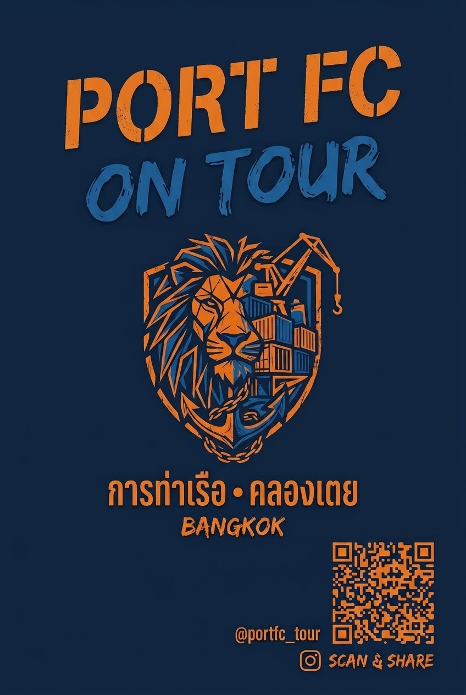

Sticker gesehen?
Foto hochladen · Ort angeben · auf die Karte kommen. Fertig in 20 Sekunden.
Schritt 1 von 3 — Foto vom Sticker
📸
Foto auswählen
oder hier reinziehen
Sticker scannen. Spot melden. Community wachsen lassen. Port FC Bangkok reist mit dir — von Klong Toei in die ganze Welt.

Foto hochladen · Ort angeben · auf die Karte kommen. Fertig in 20 Sekunden.
Bangkok ist Home. Alles andere ist Auswärtsspiel. 🟠
Klong Toei · PAT Stadium · Home 🟠
Tempelhofer Feld · @thai_in_berlin
Shibuya · @portfc_jp
Soho Thai Restaurant · @london_thais
Muay Thai Gym · @muay_sydney
Thai Town · Hollywood Blvd
Kein Shop. Kein Minimum. Einfach SVG downloaden, beim lokalen Druckshop ausdrucken und losklebt.
Kostenlos auf GitHub. Mehrere Formate verfügbar.
DM Drogerie, Flyeralarm, Stickermule oder lokaler Copyshop. 8–10cm Größe empfohlen.
Bar, Laterne, Hostel, Gym, Flughafen — überall wo Thai-Expats auftauchen.
@portfc_tour taggen + #PortFConTour. Jeder Post wird gerepostet!
8×8cm rund oder 10×6cm rechteckig. Wetterfest laminiert hält am längsten.
Flyeralarm.de, Stickermule.com oder einfach DM Drogerie (Fotoabzüge).
Thai Restaurants, Muay Thai Gyms, Expat-Bars, Hostels, Flughäfen.
Immer Foto machen! @portfc_tour taggen → wir reposten dich.
Folge für Live-Sightings, Reposts und Community-Drops.
Jeder Fan-Post wird gerepostet — garantiert.
Lukas Nico Schäfer
Kielberger Straße 15
50969 Köln-Zollstock
Deutschland
E-Mail: lukasfra437@gmail.com
Privates Fan-Projekt ohne Verbindung zum offiziellen Port FC Bangkok, der Port Authority of Thailand oder deren Sponsoren. Alle Designs sind eigene Fan-Kreationen. Keine offiziellen Vereinslogos verwendet.
Gemäß § 19 UStG wird keine Umsatzsteuer berechnet.
Lukas Nico Schäfer, Kielberger Straße 15, 50969 Köln, lukasfra437@gmail.com
GitHub Pages (GitHub Inc., USA). Näheres: GitHub Datenschutz.
Das Sighting-Formular wird über Formspree verarbeitet. Näheres: Formspree Privacy.
Keine eigenen Cookies, kein Analytics. Die Leaflet-Karte lädt Tiles von OpenStreetMap (openstreetmap.org).
Auskunft, Berichtigung, Löschung nach DSGVO. Beschwerde: Landesbeauftragte für Datenschutz NRW.